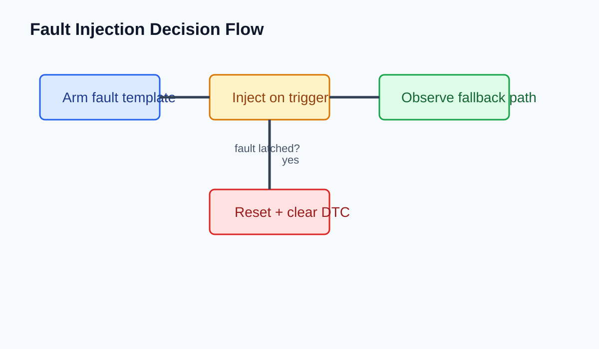

| Signal | Source | Rate | Trip / Release | Notes |
|---|---|---|---|---|
| MCU_StatorTempFilt | Plant thermal model | 10 ms | 160 / 150 degC | 一次遅れ後の値。raw temp と混同しやすい。 |
| INV_CoolantTemp | Sensor stub | 20 ms | 65 / 60 degC | 通信欠落時は last-good-hold。 |
| DerateRequestLevel | Control SW | 10 ms | 0-3 state | レベル3で torque hard cap。 |
通常は MCU_StatorTempFilt が先に立ち上がり、その後 INV_CoolantTemp が追従する。両者が同時に跳ねる場合、plant 初期条件かセンサスケーリングの疑いが強い。
